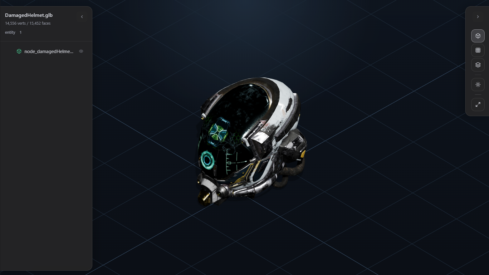

直接打开常见 3D 文件
在 VS Code 中直接查看 glb、gltf、step、stp，不需要额外跳出工程环境。
VS Code 3D Preview Extension
为机械、结构与 CAD 工程师准备的轻量只读预览器，减少切软件的成本，在仓库里直接查看模型结构。

只保留最关键的预览能力，帮助你在代码、说明文档与模型文件之间保持同一个工作上下文。
在 VS Code 中直接查看 glb、gltf、step、stp，不需要额外跳出工程环境。
预览逻辑保持只读，适合核对结构、审查资产和浏览仓库内容。
通过层级结构快速定位部件，并逐项开关节点可见性。
支持 Solid、Wireframe、Edges 三种模式，方便切换观察重点。
支持明暗背景切换、Fit View 和刷新预览，适合快速复位观察。
在代码、脚本、文档与模型之间连续切换，减少上下文中断。
页面内容不追求泛化，而是围绕结构件、装配体和工程仓库中的实际查看需求来设计。
在仓库里打开模型就能确认形体、层级和主要结构，不用反复切到独立软件。
当你需要快速浏览供应商或协作方给出的三维文件时，可以先在编辑器内完成一轮轻量检查。
阅读说明、改脚本、检查模型都留在同一工作界面里，减少思路被打断。
Supported Formats
下载 `.vsix` 后安装到 VS Code，直接打开对应文件即可进入自定义预览。
从 GitHub Releases 下载最新 `.vsix`，在 VS Code 中安装后即可使用。
打开 glb、gltf、step 或 stp 文件，插件会以只读方式进入 3D 预览界面。
对依赖外部资源的 gltf 需要完整路径；部分超大 STEP 装配可能只能解析结构而无法生成可渲染几何。
Ready to Try
如果你希望在 VS Code 中直接查看 3D 模型，而不是频繁切换软件，这个插件就是为这种工作流准备的。